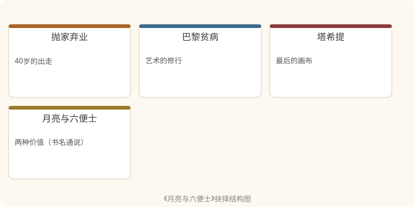

月亮与六便士
一、基本信息
| 作者 | 威廉·萨默塞特·毛姆 |
|---|---|
| 成书/出版 | 1919年出版（Britannica：The Moon and Sixpence (1919)） W. Somerset Maugham — Encyclopaedia Britannica（百科全书） |
| 国别/地区 | 英国 |
| 时代 | 现当代 · 20世纪初 |
| 体裁 | 长篇小说 |
| 语言 | 英语 |

《月亮与六便士》抉择结构图（主题·结构图）
二、创作背景
Britannica：'an account of an unconventional artist, suggested by the life of Paul Gauguin'（以保罗·高更的生平为原型的离经叛道艺术家故事——B248）。
Britannica：'Maugham's reputation as a novelist rests primarily on four books'（B248）。
三、内容脉络
证券经纪人思特里克兰德中年抛家弃业奔赴巴黎学画，终死于塔希提——以高更生平为原型（Britannica+通说）。
叙述者'我'的双重视角：道德谴责与艺术敬畏（通说）。
四、主要人物表
| 人物 | 身份 | 说明 |
|---|---|---|
| 思特里克兰德 | 画家 | 以高更为原型（Britannica） |
| 我（作家） | 叙述者 | 毛姆式的旁观者 |
五、主题与艺术特点
- 月亮（艺术）与六便士（世俗）的选择（书名通说）。
- 艺术家对伦理秩序的破坏与救赎（通说）。
- 旁观者的克制叙事（通说）。
六、影响与评论
- Britannica：《月亮与六便士》为毛姆声誉四书之一（B248）。
W. Somerset Maugham — Encyclopaedia Britannica（百科全书） - 艺术家小说的通俗经典：后世大量改编与再阐释（通说待核）。
W. Somerset Maugham — Encyclopaedia Britannica（百科全书）
七、阅读建议
难点
- 叙述者的道德立场——毛姆的反讽。
- 高更生平对照（勿等同）。
- 傅惟慈译本（上海译文出版社，通说待核）。
- 英文原版（公有领域渐近）。
对照《人性的枷锁》：毛姆的两条成长线。
八、待核实
- 书名典故（毛姆自嘲说）待核。
- 傅惟慈译本信息核对。
- 塔希提段落与高更实际行程的差异待核。
本页主要来源
威廉·萨默塞特·毛姆的其他收录作品：月亮与六便士